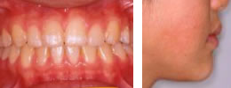

指定自立支援医療機関（育成医療・更生医療） 顎口腔機能診断医療機関

症例1) 反対咬合：咬合性外傷や舌癖を改善後、非抜歯で噛み合わせを作った症例
治療前
初診時7歳の女の子です。受け口の状態ですが、検査の結果、原因は下の前歯が前方に出ていることと診断しました。また、そのために下の前歯が上の前歯に強く当たり、下の歯が前方に押し出され、歯肉の退縮（咬合性外傷といいます）が起こっていました。さらに、舌の悪習癖（突出癖）がそのことを憎悪させていました。
下の歯にはアクティブプレートという下の前歯を内側に移動させる装置を入れ、上あごにはリンガルアーチおよび、前歯4本にブラケットをつけて反対咬合を治しました。これによって、下の前歯を救うことができました。それと同時に舌の悪習癖を治していく訓練（MFT）を始めました。
Ｉ期治療終了時
Ⅰ期治療終了時です。舌のくせ（悪習癖）も治り、咬合性外傷も改善し、永久歯が生えそろいました。ここで、もう一度、歯並び・噛み合わせの検査をしたところ、歯を抜かないで治していくことが可能と判断いたしました。これから、ＩＩ期治療（歯並び・噛み合わせ）のスタートです。
いよいよ、マルチブラケットを装着しました。ブラケットは審美ブラケットで、ワイヤーも白くコーティングしているものを装着しましたので、写真のように目立ちません。
治療後
歯並びの治療が終了した状態です。前歯でかみ切って、奥歯でかみ砕けるようになりました。初診時には咬合性外傷の見られた下の前歯も保存することができました。また、以前は受け口だったために、サ行の発音が苦手でしたが、発音も明瞭になりました。現在は、噛み合わせの安定のために、埋まっている下あごの親しらずの抜歯を口腔外科にて依頼しているところです（ちなみに、静脈内鎮静法：IVSにて寝ている状態での抜歯予定です）。
症例2) 反対咬合：成長コントロール後、埋伏歯を萠出させ、噛み合わせを作った症例
治療前
7歳の男の子です。受け口を主訴として来院しました。前歯の噛み合わせを正常に戻す（被蓋の改善）ため、下の写真のようにお口の中にはリンガルアーチという装置で上の前歯を前方に出し、チンキャップという帽子をを自宅でかぶっていただきました。下あごの過成長の度合いはそれほど悪くなかったので、チンキャップは寝ているときのみの使用とし、1年で中止することができました。
Ⅰ期治療
Ⅰ期治療の途中
被蓋が改善したので、あとは、永久歯の生え替わりをコントロールしていくことになりました。初診時と比べて、下あごの突出感も良くなりました。
上あごの左右の第2小臼歯の生えてくる場所がまったくなかったので、写真の装置で第一大臼歯を後方に動かすことによってスペースを作っていきました。その結果、右の第2小臼歯は自然に萠出しました。しかし、左の第2小臼歯は後に開窓牽引をして萠出誘導をしました。
Ⅰ期治療終了時
永久歯がほぼ生えそろい、上下のアゴの成長も問題がないので、上下にマルチブラケットを装着し、機能的な噛み合わせを作るため、Ⅱ期治療をスタートすることになりました。
このように、綺麗な噛み合わせが完成しました。口元の突出感も改善しました！
症例3) 反対咬合：第１段階（成長期）の治療で終了した症例
治療前
初診時6歳10ヶ月の男の子です。下あごの過成長による反対咬合（受け口）の患者さんです。矯正歯科治療のほかに、低舌位（舌の先が下の歯を押している）が認められたので、舌の位置の改善の訓練（MFT）も同時に行いました。
下あごの成長の抑制のために、帽子（チンキャップ）を在宅時に使用してもらいました。また、お口の中にはリンガルアーチという装置で上の前歯の位置のコントロールを行い、さらに、スライディングプレートという取り外しの効く装置をチンキャップ使用時に併用していただきました。
チンキャップは最初の1年半使用した結果、下あごの成長をコントロールすることができたために、その後しばらく使用を中断することができました。この写真は13歳時点です。男の子なので、成長のスパートが始まりましたので、再び下あごの成長のコントロールをするため、チンキャップの再使用をしてもらうことになりました。
治療後
15歳時点です。成長のコントロールがうまくいき、歯並び、噛み合わせも、ブラケットをつけずにここまできれいになりました。せっかく並んだ歯並びを崩すといけないので、下あごにまだ埋まっている親しらずを歯胚（歯の形になる前の卵の状態）を口腔外科で摘出（IVSという静脈内鎮静法にて寝ている状態で抜歯を行う）してもらいました。現在もこの噛み合わせは安定しています。
親しらずの歯胚（たまごの状態）のコーンビームCT画像
当院では、コーンビームCTを導入しているため、親しらずの位置を三次元的に確認することができます。また、その下に存在している下歯槽管という神経との位置関係も計測することができます。より安全に、かつ手術の侵襲を少なくするために、これらの情報を口腔外科と一緒に協議して、チームアプローチ（包括歯科治療）を行っています。
症例4) 反対咬合（受け口）
治療前
上の前歯と下の前歯が逆に噛んでいて、横顔では、下の顎が前に突き出ており、顔がしゃくれた感じに見えます。下唇に上唇が押し上げられて、唇を前にとんがらせたように見えます。発音もサ行が明瞭ではありません。遺伝的要因が大きい場合には成長とともに、うけ口の程度が悪化することが多く、また男の子と女の子では、成長の違いがあり治療期間も違ってきます。
治療後

上の前歯と下の前歯が逆に噛んでいて、横顔では、下の顎が前に突き出ており、顔がしゃくれた感じに見えます。下唇に上唇が押し上げられて、唇を前にとんがらせたように見えます。発音もサ行が明瞭ではありません。遺伝的要因が大きい場合には成長とともに、うけ口の程度が悪化することが多く、また男の子と女の子では、成長の違いがあり治療期間も違ってきます。
旧HPに掲載されていた症例